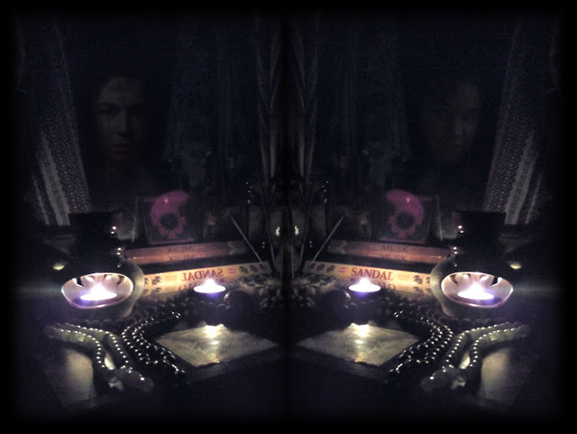

22 Зазеркальный гость
Я - зазеркальный гость,
Дремлющий хищник твой
Твой верный сумрачный демон
Хочешь открыть — открой.
Знай — я всегда с тобой.
Я жду тебя в твоей бездне.
В осознанных снах я вглядывалась в образы, пытаясь разглядеть их и запомнить, чтобы потом перенести на рисунок. Внутри этих образов скрывалось нечто жуткое, которое при этом являлось ключом к чему-то определяющему.
Этот ключ с большим или меньшим успехом я неосознанно пыталась вкладывать в мои картины, когда я рисовала раньше, я чувствовала, что это именно то, что я должна делать - добавлять в картины присутствие ЭТОГО. Я вгляделась вглубь, чтобы понять, что такое ЭТО. Что это за иррациональный источник ужаса, который пытался выбраться наружу. Ужас, давно знакомый мне с детства. В этот момент я поняла/вспомнила, что этот кошмар был непосредственно связан с тем существом, которое раньше приходило в детстве в моем сны, а потом мы с ним взялись за руки, оно сказало, что мы - другие и теперь отныне мы будем вместе и перестало появляться. Много лет я искала его. Я даже не верила, что смогу его найти, узнать, что же это такое. Причем все это время этот ужас закрывался от меня стеной, нечто меня защищало, чтобы не дать мне сойти с ума, заглянув ему в глаза. Я видела существ с глазами со множеством зрачков, или без зрачков вообще, все они глядели на меня, неправильных, искаженных, позже я поняла, что все они были мертвые. Тогда - или после, я попыталась понять, почему тема смерти так сильно преследует меня, и кто же в конце концов было это существо, которое даже в каком-то из детских снов представало в образе смерти, но смертью само по себе не было.
Меня спросили: хочешь очную ставку с ним прямо сейчас, причем в ТВОЕЙ реальности, а не во сне?
Я растерялась и испугалась, но пересилила страх, сказала, что хочу.
Так мы и встретились.
